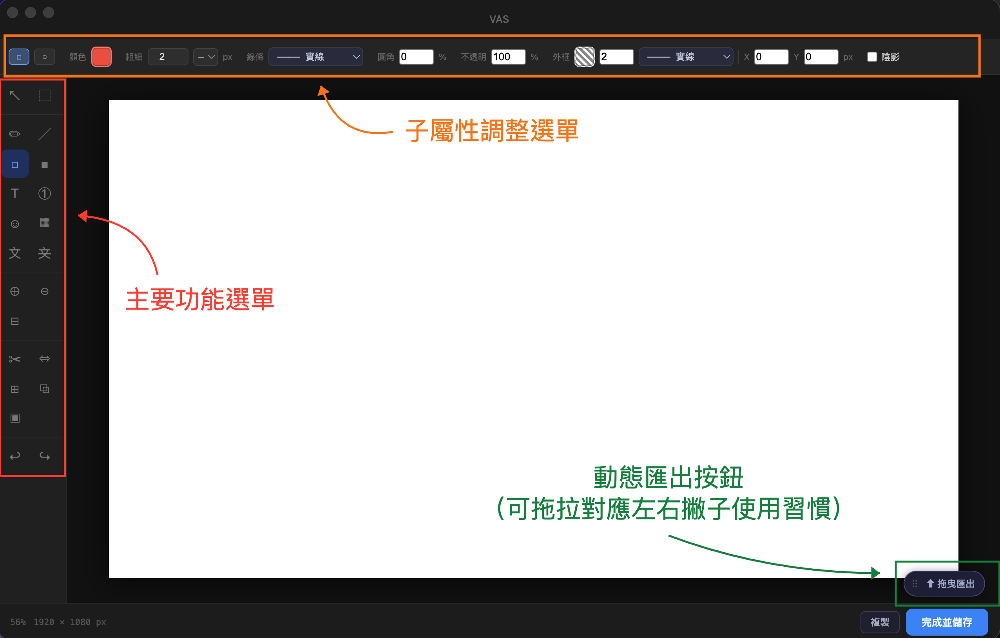
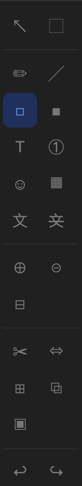

User Guide
VAS 操作手冊
工具列、編輯器介面與浮動工作列功能說明
Section 01
編輯器介面
三個主要操作區域

主要功能選單
左側垂直工具列。點選工具後，畫布上的操作會對應切換。目前使用中的工具以藍色高亮標示。
子屬性調整選單
頂部工具列。依所選工具動態更換內容，可調整顏色、粗細、不透明度、線條樣式等屬性。
動態匯出按鈕
右下角浮動按鈕。可拖曳移動位置，對應左右撇子不同使用習慣。完成後拖曳至目標應用程式即可匯出。
Section 02
左側工具列
所有標注工具一覽，括號內為快捷鍵

選取
選取V
框型選取M
繪圖
筆型P
線條L
矩形框R
色塊B
標注
文字T
編號N
符號印章U
隱私與遮蔽
OCR 文字辨識G
馬賽克／模糊X
隱私遮蔽K
畫布操作
放大⌘=
縮小⌘-
適合視窗⌘0
裁切C
調整大小S
延伸畫布E
其他
疊入圖片O
開啟／新畫布
撤銷⌘Z
重做⌘⇧Z
Section 03
浮動工作列
懸浮在桌面上的截圖與工具入口

全螢幕
截取整個螢幕畫面，立即進入編輯器。
視窗
點選後再點擊任意視窗，只截取該視窗範圍。
矩形
拖曳選取任意矩形區域後截圖。
延遲
設定 1–3 秒延遲，補抓 tooltip、dropdown 等稍縱即逝的狀態。
開啟
從本機開啟現有圖片，或建立指定尺寸的新畫布。
白板
開啟空白畫布，從零開始建立圖像內容。
批次轉
拖入多張圖片，一次轉換為 JPG、PNG、WebP 等格式，支援浮水印與尺寸調整。
?
開啟本操作手冊。